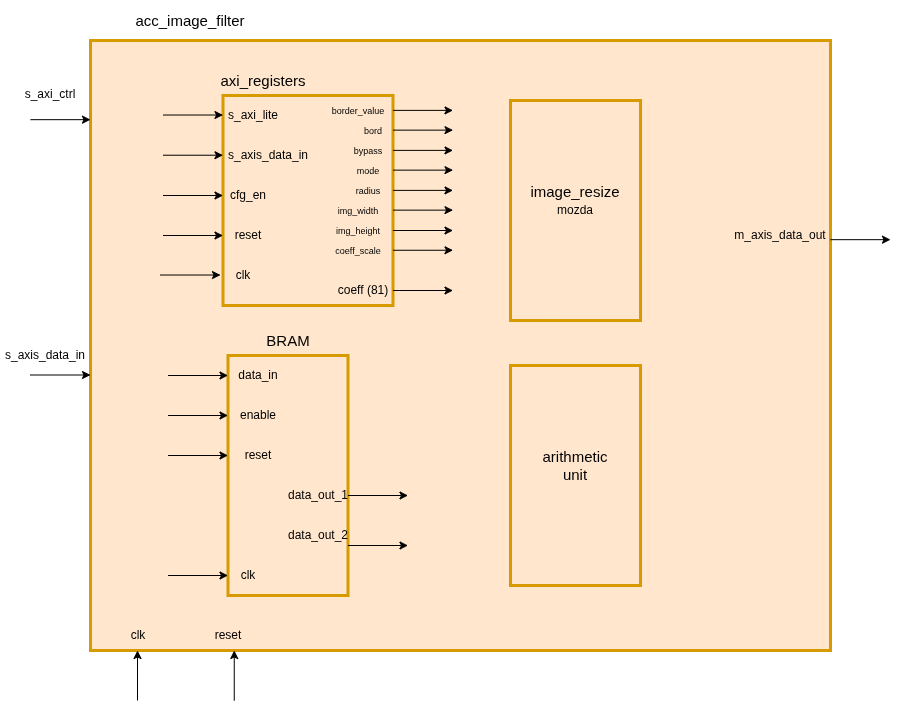
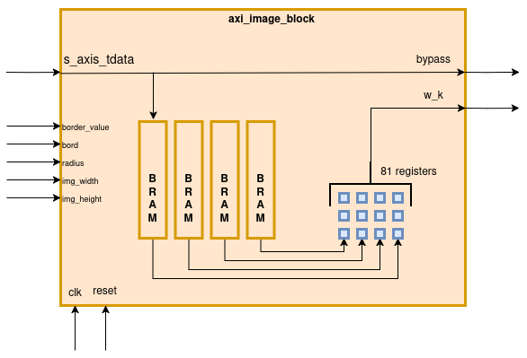
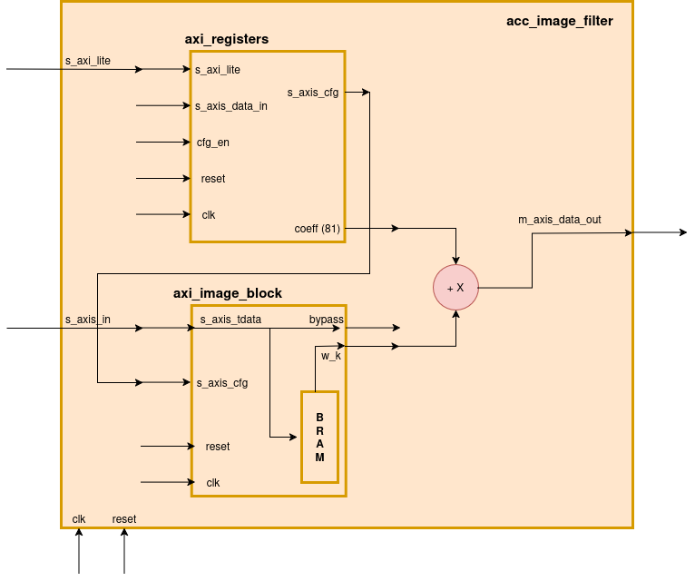
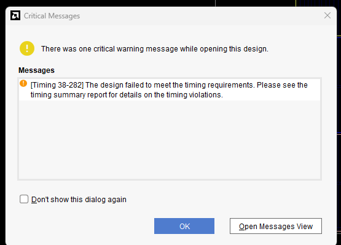
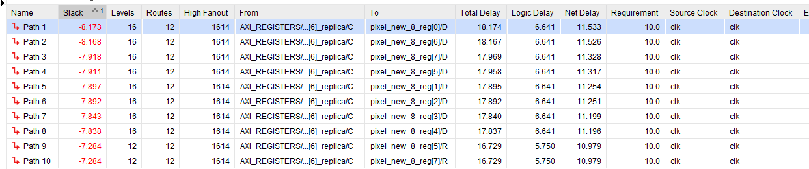
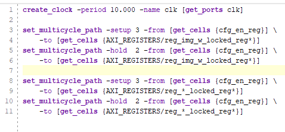
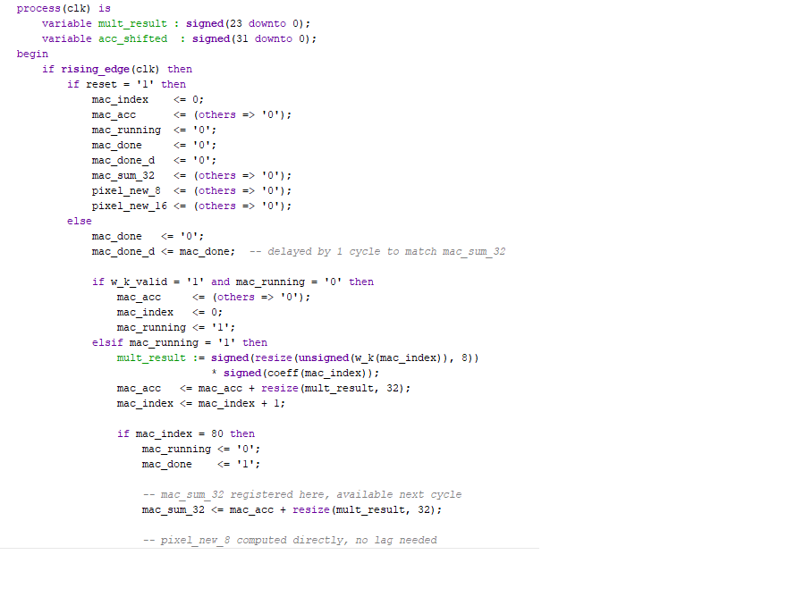
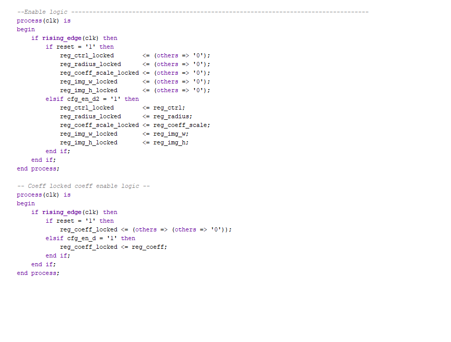
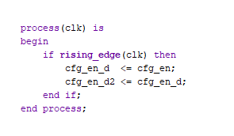

09. feb 2026.
Danas smo počeli izradu projekta. Konačno smo odradili LAB2 jer sko zaključili da nam je to pola posla. Dobar deo projekta
se svodi na LAB2.
Zajedno smo prosli svih 24 strane, doduše zbrzali smo deo sa primerima za filtere jer sko skontali da
je taj korak daleko od nas.
Imali smo problema sa ILA-om ponovo.
Dodavanjem nje u VHDL kood, preko mark-debug komandi, dobili smo debug_cores xsa fajl
ALI
Kad probamo da dodamo u Hardware manager, alat nam izbacuje grešku da nije uspeo da nadje debug cores.
U nastavku prilažem sliku na uvid kao dokaz. Verujem da je ILA jako bitan deo izrade VLSI sistema i voleo bih da naučimo da je koristimo
što pre.


U narednim danima počećemo sa izradom akceleratora, prvo osnovne potrebe a onda i bonuse.
10. feb 2026.
Danas smo se najviše pozabavili preliminarnom verzijom blok dizajna. Dodali smo Timer i ovako bi otprilike
trebalo da izgleda naš finalni projekat, samo umesto acc_neg_image treba da stoji acc_image filter.

Axi_timer smo ostavili skroz bez interrupta jer smo zaključili da nam nije potreban jer ne odlučuje Timer kada treba da
izračina vreme.
Potom zmo započeli izradu našeg akumulatora odnosno komponente acc_image_filter. Ovo je neka naša zamisao po tekstu zadatka.

U okviru njega, ralizovaćemo kao posebne komponente BRAM i aritmetičku jedinicu pa ćemo ih posle kao komponente dodati
u naš filter.


Ispod ću priložiti kodove za obe komponente. Bram je kompletiran, razlikuje se malo sa slike, odnosno razdvojili smo
data_out na data_out_1 i data_out_2.
Komponenta acc_image_filter za sad ostaje nekompletirana.
BRAM
acc_image_filter
13. feb 2026.
Danas smo odradili dosta VHDL-a, promenili malo strukturu i arhitekturu. Dodali smo enable signal na BRAM. Napredak je veliki i trebalo nam je dosta vremena
da ukopimo sve ali uspeli smo. Verujem da je ovo danas najteži deo jer ako bude bude bilo teže ne znam dal ću izdržati psihički.
Posle duže razmišljanja i mozganja shvatili smo da treba da koristimo AXI Lite modul interfejs tako da smo orijentisali ideju oko toga. Realizovali
smo axi_registers komponentu koja će biti jedna od podkomponenti zajedno sa BRAM-om, aritmetičkom jedinicom i možda komponentom za proširivanje slike.
Dole prilažem sliku za primer. Prva slika je akcelerator iznutra, kad poređamo sve komponente.

Ove dve slike predstavljaju BRAM i našu novu komponentu axi_registers.
.png)

Nova komponenta axi_registers treba da vodi računa o upisu i ispisu u interne registre, kako bi mogli da enkapsuliramo
i zaboravimo na registre skroz. Preko registra cfg_en kontrolišemo ispis. Ostali registri su već uveliko poznati piscu i
čitaocima nadam se. Komponenta je napravljena prema axi_lite templejtu sa vezbi. Axi_lite mašina stanja je takodje realizovana u okviru ove komponente.
Takođe, kako bi ulepšali pisanje odnosno učinili naš kood preglednijim koristili smo se package modulom axi_registers_pkg koji smo mi napravili.
Sa ovime nam ostaje da realizujemo još najmanje jednu, a najviše 2 komponente. Dole ću priložiti kodove:
novi BRAM
BRAM tb, fali enable
axi_register_pkg
axi_registers
axi_registers_tb
15. feb 2026.
Realizovali smo komponentu, koju smo privremeno nazvali img_resize jer nam je inicjalna ideja bila da BRAM-ove punimo sa vrednostima potrebnim
za menjanje veličine slike. Komponenta je trebala da učitava vrednosti u zavisnosti od stanja signala bord i signala radius i na izlaz
izbacivala vrednosti za procesiranje. Kako je ta logika bila ili previše komplikovana ili nemoguća odlučili smo se za drugačiji pristup. Ova
komponenta služi da samo brine o tome šta ulazi u BRAM-ove i na izlaz daje naš pomerački prozor. Najveći problem je bio da je napravimo modularnom
u zavisnosti od veličine našeg prozora. Testirali smo je samo na prozoru 3x3, ispravićemo greške u budućnosti ako ih bud bilo.
Komponenta BRAM koju smo realizovali je imala svoje probleme tako da smo i nju ispravili. Kompletnu logiku promene veličine prozora i hendlovanja
ivičnih slučajeva implementiraćemo u našoj glavnoj komponenti. Videćemo kako funkcioniše taj pristup u narednim danima.
Dole ću priložiti sve komponente koje smo izmenjali:
ispravljeni BRAM
ispravljeni BRAM_tb
img_resize
img_resize_tb
axi_registers
axi_registers_pkg
23. feb 2026.
Dugo nisam updejtovao jer sam svakog dana mislio da ću završiti projekat i onda ću napisati post. Nažalost, projekat je zahtevniji
nego što sam očekivao. Nismo stigli da ga uradimo do roka jer smo imali problema u realizaciji našeg akceleratora i komponente
koja vodi računa o BRAM-ovima. Ostavićemo ispit za februarski rok(u martu), i adam se da ćemo ispraviti greške do tad. Trenutno
obojica nemamo snage ni vremena više da se bavimo sa ovim, tako da trebalo bi da napravimo pauzu od nekoliko dana, pre
nego nastavimo sa izradom.
Uspeli smo da realizujemo komponentu koja vodi računa o BRAM-ovima i o širini slike, pa time popunjava naše registre
w_k sa vrednostima koje odmah možemo da šaljemo na obradu. Uspeli smo da realizujemo sva proširenja, s time da
proširenje sa najbližim vrednostima pravi veće ili manje greške u zavisnosi od radiusa. Logika iza svih
proširenja je da se u zavisnosi od radiusa, odredjeni broj ciklusa BRAM-ovi pune sa odredjenim vrednostima. Na taj
način odredjeni broj taktova više stagniramo, ali mi deluje ta logika mnogo zdravije i bolje za implementaciju
nego da pišemo previše if i case izjava.
Logika za proširenje sa konstantnim vrednostima, ili bez proširenja radi prelepo, problem nastaje kod proširenja
sa najbližimvrednostima. Nismo dizajnirali arhitekturu koja može da podržava punjenje BRAM-ova koji se ne koriste,
pa smo morali da realizujemo to svičovanjem internih registra window_k, koji vode računa o propagiranju
signala kroz registre. Taj proces svičovanja uglavnom ima problem sa tajminogm, tako da smo za gornji levi i
donji levi ugao imali greške. Drugačija logika je napravljena za gornju i donju stranicu.
Donja stranica bi se punila tako što kratko vežemo BRAM1, odnosno prvi BRAM na ulazu piksela, a gornju stanicu
smo popunili tako što smo duplo(ili više) vezali neki od narednih izlaza BRAM(ova).
Ispod ću navesti sliku koja pokazuje celu axi_image_block komponentu.

Za kraj, imali smo problem u povezivanju svih komponenti. Nismo znali kako da napravimo testbench za tu komponentu, niti je znao AI tako
da smo morali na slepo da radimo. Problem je nastao sa mode = '1' odnosno sa iylayom u Q9.7 formatu. Pokusali smo da realizujemo to
ali nam alat javlja greske konstantno. Razlicitih priroda. Na kraju smo samo odustali. Videcemo kako ce da ide kroz koju nedelju.
Zasad cu ostaviti slike i kodove koje imamo zasad. Trebala bi nam pomoć neka, čisto kako bi znali kako da nastavimo dalje.

Ovo su greške koje smo dobijali na kraju, pretpostavljam da je problem kako sam realizovao q9.7, dobijao sam greške prvo
da je previše DSP blokova iskorišćeno, pa sam tražio utehu u chatgpt-ju jer nisam znao šta mogu da uradim povodom toga,
a nisam imao živaca da smišljam više, jer sam hteo da završimo do januarskog roka. Nažalost ipak ću morati da mozgam još o ovome.


Dodali smo i constrain file, kako bi možda rešili neke probleme. Kako prošle godine nismo stigli do tog dela u predmetu VLSI, što se projekta tiče,
samo sam prekopirao uputstvo koje sam dobio od grešaka i sa interneta:

I na kraju evo ispod realizacija izlaza. Oreginalni izlaz koji sam ja napravio je bio potpuno drugačiji, ali usled grešaka
koje sam dobijao sam ga stalno menjao i nadogradjivao kako bi možda nešto proradilo. Promeniću ga skroz kada ga budem realiyovao ponovo.

mac_acc posle dodajemo na pixel_new_8 i pixel_new_16 samo na drugačiji način.


Evo kodovi koje smo odradili, sve u sustini zajedno sa testbencevima:
acc_image_filter
acc_image_filter_tb
axi_registers
axi_registers_tb
axi_image_block
axi_image_block_tb
BRAM
BRAM_tb
main.c